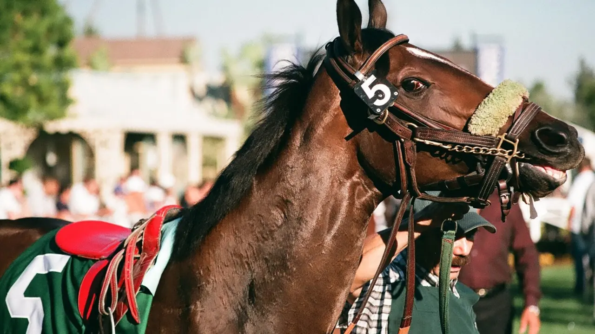

En bref : Analyser une course hippique, c'est croiser 6 critères essentiels : la forme récente, la distance, le terrain, le poids, la position de corde et le jockey. Ce guide vous apprend à construire votre propre sélection comme un pronostiqueur professionnel.
Chaque jour, des milliers de parieurs jouent au Quinté+ sans méthode. Ils choisissent un cheval au hasard, suivent un pronostic sans comprendre, et perdent leur mise. La différence entre un joueur amateur et un analyste expérimenté ne tient pas à la chance : elle tient à la méthode d'analyse.
Voici comment analyser une course hippique en 6 étapes, que ce soit pour le Quinté+, le Tiercé ou le Quarté+.
Avant même de regarder les cotes, vous devez comprendre qui coure. Chaque cheval a un profil unique, et c'est en comparant ces profils que vous trouvez le meilleur rapport qualité-prix.
| Donnée | Où la trouver | Pourquoi c'est important |
|---|---|---|
| Forme récente | 5 dernières courses | Indique la forme actuelle du cheval |
| Distance | Programme PMU | Certains chevaux sont des sprinters, d'autres des fondus |
| Terrain | Conditions de la course | Bon, souple, lourd, cendré, sable - chaque cheval a ses préférences |
| Poids | Programme PMU | Impact direct dans les derniers mètres |
| Corde | Programme PMU | Certains chevaux préfèrent la corde gauche ou droite |
| Jockey/Driver | Programme PMU | Statistiques de victoire sur la distance et le terrain |
L'erreur classique : regarder uniquement le numéro d'arrivée. Un cheval qui finit 5ème peut avoir couru mieux qu'un cheval qui finit 2ème. Voici comment lire un dernier parcours :
La distance est le critère le plus sous-estimé par les parieurs. Un cheval qui brille sur 2100m peut être médiocre sur 2700m, et inversement.
La règle : Ne jamais jouer un cheval sur une distance où il n'a jamais prouvé sa valeur. Vérifiez toujours si le cheval a déjà couru cette distance, et quel a été son résultat.
| Discipline | Distances typiques | Ce qu'il faut vérifier |
|---|---|---|
| Trot attelé | 2100m à 3100m | Réduction kilométrique, stamina |
| Trot monté | 2100m à 2850m | Puissance, capacité à finir fort |
| Galop plat | 1200m à 2400m | Vitesse pure vs endurance |
| Obstacle (haies) | 3000m à 4500m | Technique, agilité, courage |
Le terrain est le facteur le plus variable et le plus influent. Un même cheval peut être brillant sur terrain bon et médiocre sur terrain lourd.
Dans un handicap, le poids est un facteur déterminant. Un cheval qui porte 60kg a 3-4 longueurs de désavantage sur un cheval à 54kg. Sur une course serrée, ça fait toute la différence.
La question clé : Ce cheval a-t-il déjà porté ce poids ? Comment a-t-il réagi ?
À Vincennes (corde à gauche), les chevaux partant des numéros bas ont un avantage tactique. À Enghien, c'est l'inverse. La position de corde influence le parcours optimal.
Une bonne sélection ne se improvise pas. Voici la structure que nous utilisons chaque jour sur Bravo Quinté :
Le cheval le plus solide, qui réunit au moins 4 des 6 critères. C'est votre cheval de confiance, celui qui a le plus de chances de finir dans les 3 premiers.
Des concurrents sérieux qui peuvent raisonnablement rejoindre le podium. Ils doivent avoir un profil différent de la base pour maximiser la couverture.
Des outsiders à bon rapport, pas des tocards. Un outsider à 15/1 avec 2 bonnes places récentes vaut mieux qu'un favori à 3/1 en baisse de forme.
À retenir : L'analyse d'une course hippique est un exercice méthodique. Il n'y a pas de formule magique, mais une méthodologie rigoureuse vous donne un avantage considérable sur les joueurs qui jouent au feeling.
Chaque jour sur Bravo Quinté, nous appliquons exactement cette méthodologie. Dans chaque analyse, vous trouverez :